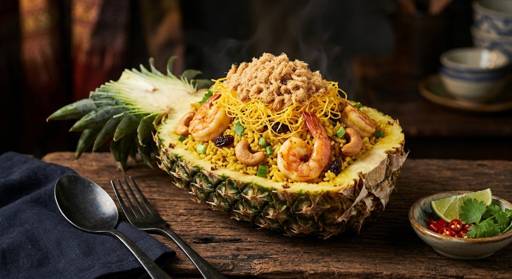

Curry-scented fried rice with prawns, Chinese sausage, raisins and cashews — served in the hollowed pineapple it was born from.

ข้าวผัดสับปะรด is fried rice with a stage: the pineapple half it's served in. Every source starts the same way — halve the fruit, hollow the shell, dice the flesh — and the Kapook recipe's instruction is the practical one: "if you can't be bothered, just slice it normally and use a plate." The shell is presentation; the rice is the dish.
The flavour signature across all four sources is ผงกะหรี่, curry powder — a teaspoon to a tablespoon, enough to turn the rice gold and give it that faint sweet-spice edge, plus the sweet-salty trio of the Thai fried-rice kitchen. The cast is the fried-rice greatest hits: prawns, pork or char siu, Chinese sausage, egg, raisins, cashews, and the crown of หมูหยอง, pork floss.
The technical point every source agrees on is the finish: high heat, fast. TrueID states it outright — "crank the fire up, because there's not long to stir and the pineapple will leak water and make the rice soggy." Cold rice goes in (Kapook specifies it); hot pineapple goes in last.
| Thai | English | Amount |
|---|---|---|
| สับปะรด | Pineapple (flesh + shell) | 1 cup flesh |
| เนย | Butter | 3 tbsp |
| กระเทียม / หอมใหญ่ | Garlic / onion | 1 tbsp / 2 tbsp |
| หมูหั่นชิ้น | Pork | 100 g |
| กุ้งสด | Prawns | 200 g |
| ไข่ไก่ | Eggs | 2 |
| ข้าวหุงสุกแช่เย็น | Cold cooked rice | 2 cups |
| แครอท / ถั่วลันเตา | Carrot / peas | 2 tbsp each |
| ลูกเกด | Raisins | 2 tbsp |
| กุนเชียง | Chinese sausage | 1 |
| ผงกะหรี่ | Curry powder | 1 tbsp |
| น้ำมันหอย / น้ำปลา | Oyster sauce / fish sauce | 3 tbsp each |
| น้ำตาลทราย | Sugar | 1 tbsp |
| เม็ดมะม่วงหิมพานต์ / หมูหยอง | Cashews / pork floss | ½ cup / 3 tbsp |
Phol Food Mafia's baked version: rice with char siu and no egg, filled into the shell and baked 200°C for 5 minutes. TrueID's version adds ham and mixed vegetables to the cast.
Butter or oil. Kapook and TrueID fry in butter — Kapook's reason is blunt: "butter makes the fried rice much more fragrant." Phol and the Cookpad version use oil. The butter version is the restaurant flourish.
Baked or not. Phol's version is a ข้าวอบ — fried, then filled into the shell and baked at 200°C for five minutes, his "extravagant touch." The others serve straight from the wok into the shell, unbaked.
The meat cast. Prawns in every source; then pork (Kapook), char siu (Phol), or Chinese sausage plus ham (TrueID). The sausage is the constant luxury ingredient.
Egg. Kapook and TrueID fry eggs into the rice; Phol and Cookpad leave them out. The egg versions are richer and the grains separate better.
Pork floss. Kapook, Cookpad and TrueID crown the rice with หมูหยอง; Phol finishes with fried shallot and coriander instead. The floss is the Thai fried-rice signature garnish.
This recipe is translated from the following Thai-language sources. Where they disagree, we've said so.
1. Kapook — "ข้าวผัดสับปะรด สูตรสีสวยอร่อยครบเครื่องพ่วงประโยชน์" (the recipe used here) — cooking.kapook.com
2. Phol Food Mafia (พล ตัณฑเสถียร) — "Pineapple Baked Rice (ข้าวอบสับปะรด)" (the baked-in-the-shell version) — pholfoodmafia.com
3. TrueID — "สูตรทำ ข้าวผัดสับปะรด เมนูข้าวมิคกี้เมาส์" (the ham-and-mixed-veg version + the high-fire tip) — food.trueid.net
4. Cookpad (tanyarak-maeploy) — "สูตร ข้าวผัดสับปะรด" (the oil-based home version) — cookpad.com